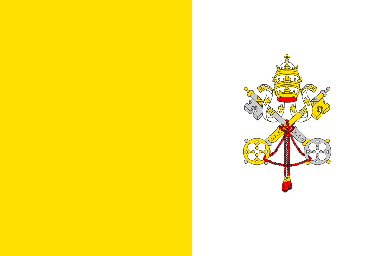

Midias católicas
Para mais informações
Memento, homo, quia pulvis es et in pulverem reverteris

Grupos Telegram
Confraria S. Luis VI
História e fé católica
Santo Rosário Mariano
O Templvm
Fotos Católicas
Bons Padres
Pe. Leonardo Wagner
Pe. Paulo Ricardo
Pe. Gabriel Villaverde
Pe. José Augusto
Pe. Duarte Sousa
Blogs Católicos
Permanência
Radio Mariae
Cristiano Xavier
Euterpe
Rafael Garcia
Livrarias Católicas
Editora Cléofas
Editora Ecclesiae
Editora Imaculada
Livraria Pe. Leonardo Wagner
Livraria Guilherme Freire
Institutos
Confraria S. Luis VI
História e fé católica
Santo Rosário Mariano
O Templvm
Fotos Católicas
Sites de Canto e Música
Gregorian Base
Partituras Católicas
Santo Rosário Mariano
O Templvm
Fotos Católicas